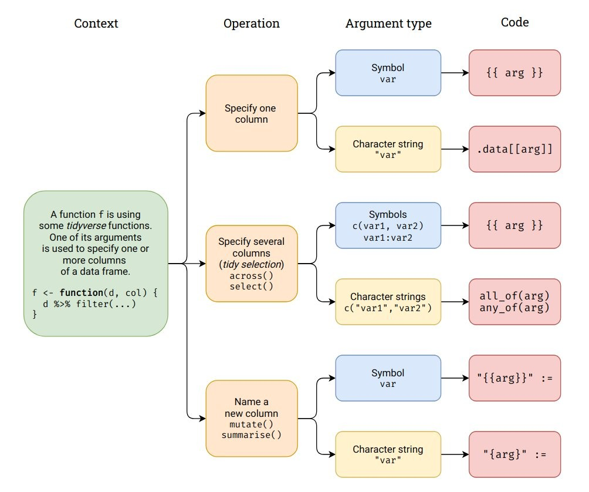

Tidyeval
Misc
- {rlang}
- Notes from
- Programming with dplyr
- Brad Cannell’s notes
- Cheatsheet (source)
 - Examples in the wild
{kind=link}
Terms
- Data Masking - Allows you to use data variables as if they were variables in the environment (i.e. you write my_variable not df$myvariable).
- e.g.
arrange,count,filter,group_by,mutate, andsummarise
- e.g.
- Tidy Selection - Helper functions that allow you to easily choose variables based on their position, name, or type (e.g.
starts_with("x")oris.numeric).- e.g.
across,relocate,rename,select, andpull - When you have an env-variable that is a character vector, you need to use
all_oforany_ofdepending on whether you want the function to error if a variable is not found.
- e.g.
- Env-Variables - These are “programming” variables that live in an environment. They are usually created by an assignment i.e.
<-. - Data-Variables - These are “statistical” variables that live in a data frame. They usually come from data files (e.g. .csv, .xls), or are created manipulating existing variables. When you have the data-variable in a function argument
i.e. An env-variable that holds a promise), you need to embrace the argument by surrounding it in doubled braces, like
filter(df, {{ var }}(https://dplyr.tidyverse.org/reference/filter.html).Example
df <- data.frame(x = runif(3), y = runif(3))- It creates a env-variable, df, that contains two data-variables, x and y. Then you can extract the data-variable x out of the env-variable df using
$.
- It creates a env-variable, df, that contains two data-variables, x and y. Then you can extract the data-variable x out of the env-variable df using
String Input or Character Vector
e.g.
compute_mpg(model = "ford").data is not a data frame; it’s a special construct, a pronoun, that allows you to access the current variables either directly, with
.data$xor indirectly with.data[[var]]. Don’t expect other functions to work with it.- Never uses data masking or tidy select
Syntaxes:
filter(.data[input] > 0) filter(.data[input] == .env$value) group_by(.data[input]) summarize(var2 = mean(.data\[input\])- input and value are both string function inputs
- it is consistent with other tidyeval where handling lhs is a little different than rhs
Example
#' @importFrom rlang .data # when data is the only thing that's user-supplied my_summary_fun <- function(data) { data %>% filter(.data$x > 0) %>% group_by(.data$grp) %>% summarize(y = mean(.data$y), n = n()) } # character vector needs tidy selection (also see all_of and any_of in Terms section) summarize_mean <- function(data, vars) { data %>% summarize(n = n(), across({{ vars }}, mean)) } # usage mtcars %>% group_by(cyl) %>% summarize_mean(where(is.numeric))
Nonstring Input
e.g.
compute_mpg(model = ford)Syntaxes
filter([{{input}}]{style="color: goldenrod"} \> 0) summarize({{col_name}} = mean({{col_name}}, na.rm = T) ggplot(df, aes(x = [{{x}}]{style="color: goldenrod"})Example:
my_summarise2 <- function(data, expr) { data %>% summarise( mean = mean({{ expr }}), sum = sum({{ expr }}), n = n() ) }
Creating Variable Names From User Input
Requires glue syntax and
:=With a string input,
"{var}"can also be usedExample 1:
my_summarise4 <- function(data, expr) { data %>% summarise( "mean_{{expr}}" := mean({{ expr }}), "sum_{{expr}}" := sum({{ expr }}), "n_{{expr}}" := n() ) } my_summarise5 <- function(data, mean_var, sd_var) { data %>% summarise( "mean_{{mean_var}}" := mean({{ mean_var }}), "sd_{{sd_var}}" := mean({{ sd_var }}) ) }Example 2: Old School
my_function <- function(data, var, suffix = "foo") { var <- enquo(var) prefix <- as_label(var) data %>% summarise("{prefix}_mean_{suffix}" := mean(!!var)) }
Undetermined Number of User Supplied Inputs
Using …
Make sure that any other arguments start with . to reduce the chances of argument clashes
- e.g. The .data in the example isn’t the .data construct for string inputs
Example:
my_summarise <- function(.data, ...) { .data %>% group_by(...) %>% summarise(mass = mean(mass, na.rm = TRUE), height = mean(height, na.rm = TRUE)) } starwars %>% my_summarise(sex, gender)
Loops with {purrr}
List item input uses .data construct
Example:
mtcars %>% names() %>% purrr::map(~ count(mtcars, .data[[.x]])) # quoted input disagg_ucb <- function(x, y) { UCBadmit %>% select(-applications) %>% group_by(dept, applicant.gender) %>% tidyr::uncount(weights = !!sym(x)) %>% mutate(admitted = y) %>% select(dept, gender = applicant.gender, admitted) } ucb_01 <- purrr::map2_dfr(c("admit", "reject"), c(1, 0), ~ disagg_ucb(.x, .y) )- This same technique works with for loop alternatives like the base R
apply
- This same technique works with for loop alternatives like the base R
Shiny
Example:
library(shiny) ui <- fluidPage( selectInput("var", "Variable", choices = names(diamonds)), tableOutput("output") ) server <- function(input, output, session) { data <- reactive(filter(diamonds, .data[[input$var]] > 0)) output$output <- renderTable(head(data())) }
Old Tidy Evaluation Ebook
* The book no longer exists and most, if not all, of the syntax has been superceded (by the stuff in the previous sections). It should still work though since quoting functions, etc., still exist in {rlang}. *
The technical term for delaying code evaluation is quoting, because evaluation must first be suspended before being resumed in a different environment.
A blueprint contains both the expression and the environment. The evaluation of an expression captured as a blueprint can be resumed at any time, possibly in a different context
vars( ends_with("color"), height:mass ) # a blueprint #> <list_of<quosure>> #> #> [[1]] #> <quosure> #> expr: ^ends_with("color") #> env: global #> #> [[2]] #> <quosure> #> expr: ^height:mass #> env: globalvarsperforms external quoting , which is when a helper function quotes args and outputs blueprints.
!! (Bang, Bang)
modifies the quoted code by inlining the value of its operand right into the blueprint
it is evaluated before any R code is evaluated. In other words, before the code is parsed by dplyr, rlang is able to evaluate !!var, replacing it with (quoted) value. Sometimes referred to as partial evaluation.
Variable or argument value is inserted as is (i.e. numeric is a numeric, string is a string)
x <- 1 rlang::qq_show( starwars %>% summarise(out = x) ) #> starwars %>% summarise(out = x) rlang::qq_show( starwars %>% summarise(out = !!x) ) #> starwars %>% summarise(out = 1) col <- "height" rlang::qq_show( starwars %>% summarise(out = sum(!!col, na.rm = TRUE)) ) #> starwars %>% summarise(out = sum("height", na.rm = TRUE))To refer to column names inside a blueprint, we need to inline blueprint material. We need symbols (references to R objects):
sym(col) #> height rlang::qq_show( starwars %>% summarise(out = sum(!!sym(col), na.rm = TRUE)) ) #> starwars %>% summarise(out = sum(height, na.rm = TRUE))- Values are no longer as is
symtransforms argument or variable value (aka an indirect reference) into a “piece of blueprint” and!!inserts transformed value of variable into the dplyr verb blueprint- AKA the quote and unquote pattern
- This pattern is the heart of programming with tidy eval functions. We quote an expression and unquote it in another quoted expression. In other words, we create or capture a piece of blueprint, and insert it in another blueprint just before it’s captured by a data masking function (i.e. dplyr function). This process is also called interpolation.
- Package up the variable value to transport it inside a quoting function and then unquote it to open up the variable and us its value in a regular way
Two types of functions:
Evaluating - Indirect references (i.e. stored value in a variable) resolved in the ordinary way and also support direct references (e.g.
df$yordf[["y"]])Quoting - Arguments are auto-quoted and evaluated in a special way
Example:
# evaluating function since this works temp <- mtcars$am sum(temp) # quoting function, this doesn't work - tries to find package named "temp" temp <- "dplyr" library(temp) # But has unquoting option, this works library(temp, character.only = TRUE) # another example temp <- "mtcars" rm(list = temp)- For tidyverse,
!!is the unquoting operator.- You can use
!!to cancel the automatic quotation and supply indirect references everywhere an argument is automatically quoted. In other words, unquoting lets you open a variable and use what’s inside instead.
- You can use
- For tidyverse,
Non-Strings for User Input Classes
Example:
grouped_mean <- function(data, group_var, summary_var) { # quote function args to essentially transform your function into a quoting function group_var <- enquo(group_var) summary_var <- enquo(summary_var) data %>% # open quoted variables inside other quoting functions group_by(!!group_var) %>% summarise(mean = mean(!!summary_var)) } grouped_mean(mtcars, am, disp)- Quote and Unquote Pattern
- Use
enquoto make a (user-defined) function automatically quote its argument. - Use
!!to unquote the argument.
- Use
- Quote and Unquote Pattern
This Quote-Unquote pattern creates a quoting function (user-defined function) wrapped around other quoting functions (dplyr functions)
Strings for User Input Classes
Example:
grouped_mean2 <- function(data, group_var, summary_var) { group_var <- sym(group_var) summary_var <- sym(summary_var) data %>% group_by(!!group_var) %>% summarise(mean = mean(!!summary_var)) } grouped_mean2(starwars, "gender", "mass") # covid cfr project cases_deaths_ccf <- function(input_col = "sev_day_cases", output_col = "sev_day_deaths") { ccf_vals <- whitened_tsb %>% feasts::CCF(!!sym(input_col), !!sym(output_col), lag_max = 40, type = "correlation") }- Transforming strings to symbols makes them suitable for unquoting
Character Vectors as User Input Classes
Example:
# transformed to a LIST of symbols cols <- syms(c("species", "gender")) cols #> [[1]] #> species #> #> [[2]] #> gender # subset the list with double bangs group_by(starwars, !!cols[[1]], !!cols[[2]]) # or use triple bang group_by(starwars, !!!cols)
A Function as an Argument
Example:
# creating a S3 class method (not necessary but this was the context of the example) mutate_with <- function(data, fn, col_in, col_out = "output") { UseMethod(generic = "mutate_with", object = data) } # with a dataframe obj class mutate_with.data.frame <- function(data, fn, col_in, col_out = "output") { dplyr::mutate(.data = data, !!col_out := fn(!!rlang::sym(col_in))) } # with a spark obj class mutate_with.tbl_spark <- function(data, fn, col_in, col_out = "output") { fn <- rlang::enquo(fn) dplyr::mutate( .data = data, !!col_out := rlang::call2(.fn = !!fn, rlang::sym(col_in)) ) } mutate_with( data = mtcars_spark, fn = mean, col_in = "mpg", col_out = "mean_mpg" ) # # Source: spark<!--?--> [?? x 12] # mpg cyl disp hp drat wt qsec vs am gear carb mean_mpg # <dbl> <dbl> <dbl> <dbl> <dbl> <dbl> <dbl> <dbl> <dbl> <dbl> <dbl> <dbl> # 1 21 6 160 110 3.9 2.62 16.5 0 1 4 4 20.1 # 2 21 6 160 110 3.9 2.88 17.0 0 1 4 4 20.1 # 3 22.8 4 108 93 3.85 2.32 18.6 1 1 4 1 20.1 # 4 21.4 6 258 110 3.08 3.22 19.4 1 0 3 1 20.1 # 5 18.7 8 360 175 3.15 3.44 17.0 0 0 3 2 20.1 # 6 18.1 6 225 105 2.76 3.46 20.2 1 0 3 1 20.1 # using a quoted function name # build the expression as a string which we then parse ourselves using rlang::parse_expr() # also works with dataframe class mutate_with.tbl_spark <- function(data, fn, col_in, col_out = "output") { condition <- paste0(fn, "(", col_in, ")") dplyr::mutate(.data = data, !!col_out := !!rlang::parse_expr(condition)) } mutate_with( data = mtcars_spark, fn = "mean", col_in = "mpg", col_out = "mean_mpg" ) # # Source: spark<!--?--> [?? x 12] # mpg cyl disp hp drat wt qsec vs am gear carb mean_mpg # <dbl> <dbl> <dbl> <dbl> <dbl> <dbl> <dbl> <dbl> <dbl> <dbl> <dbl> <dbl> # 1 21 6 160 110 3.9 2.62 16.5 0 1 4 4 20.1 # 2 21 6 160 110 3.9 2.88 17.0 0 1 4 4 20.1 # 3 22.8 4 108 93 3.85 2.32 18.6 1 1 4 1 20.1 # 4 21.4 6 258 110 3.08 3.22 19.4 1 0 3 1 20.1 # 5 18.7 8 360 175 3.15 3.44 17.0 0 0 3 2 20.1 # 6 18.1 6 225 105 2.76 3.46 20.2 1 0 3 1 20.1 # using base r (bquote + eval) mutate_with_bquote <- function(data, fn, col_in, col_out = "output") { eval(bquote( dplyr::mutate(.data = data, !!col_out := .(fn)(rlang::sym(col_in))) )) } mutate_with_bquote( data = mtcars_spark, fn = mean, col_in = "mpg", col_out = "mean_mpg" ) # # Source: spark<!--?--> [?? x 12] # mpg cyl disp hp drat wt qsec vs am gear carb mean_mpg # <dbl> <dbl> <dbl> <dbl> <dbl> <dbl> <dbl> <dbl> <dbl> <dbl> <dbl> <dbl> # 1 21 6 160 110 3.9 2.62 16.5 0 1 4 4 20.1 # 2 21 6 160 110 3.9 2.88 17.0 0 1 4 4 20.1 # 3 22.8 4 108 93 3.85 2.32 18.6 1 1 4 1 20.1 # 4 21.4 6 258 110 3.08 3.22 19.4 1 0 3 1 20.1 # 5 18.7 8 360 175 3.15 3.44 17.0 0 0 3 2 20.1 # 6 18.1 6 225 105 2.76 3.46 20.2 1 0 3 1 20.1